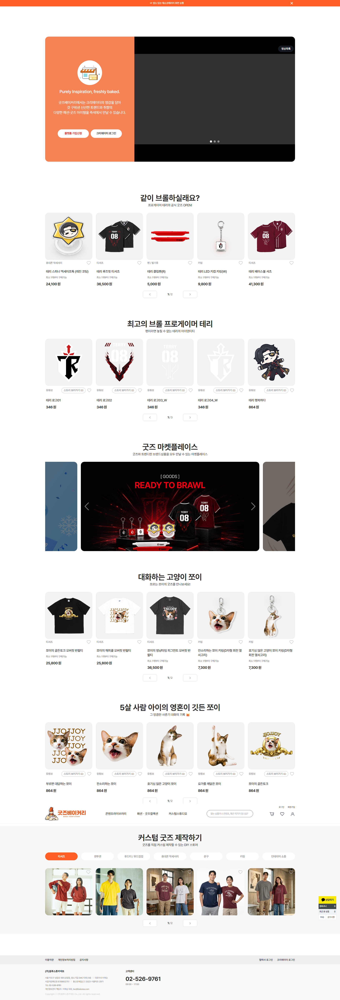
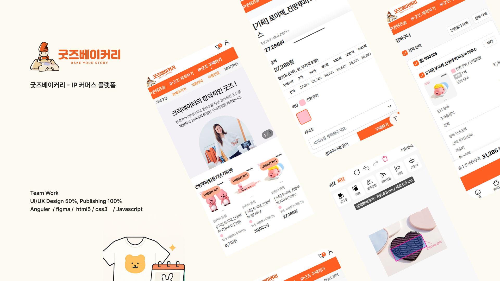

기술 스택
Angular, TypeScript, HTML5, SCSS, Git, Figma
프로젝트 소개
POD(Print on Demand) 기반 굿즈 제작 플랫폼 구축 프로젝트입니다.
기획자가 별도로 없는 환경에서 유저·관리자 페이지의 화면 흐름과 UI 구조를 함께 고민하며 퍼블리싱을 전담했습니다.
Angular 기반 공통 컴포넌트 구축부터 반응형 UI, 운영 및 유지보수까지 참여했습니다.
담당 업무
✓
Angular 템플릿 작성 및 TypeScript 수정
✓
재사용 가능한 공통 UI 컴포넌트 설계 및 제작
✓
SCSS 변수 및 mixin 기반 스타일 시스템 구축
✓
Angular 라우팅 및 컴포넌트 구조 개선
✓
Git 협업 및 코드 리뷰 참여
✓
반응형 UI 구현 및 웹 접근성을 고려한 마크업
주요 화면

메인

상품 목록상품 상세장바구니 / 주문
어려웠던 점
기획자가 없어 "유저는 어떤 순서로 상품을 만들고 주문하는가", "관리자는 무엇을 보고 판단해야 하는가"를 화면 설계 단계부터 직접 정의해야 했음
해결 방법
유저 플로우(상품 제작→장바구니→주문)와 관리자 플로우(주문 확인→제작 상태 관리)를 각각 정리한 뒤, 두 플로우에서 공통으로 쓰이는 화면 요소를 먼저 컴포넌트로 추출해 설계
결과 및 배운 점
퍼블리셔가 화면을 "받아서 만드는" 역할을 넘어, 서비스 흐름을 설계하는 단계부터 참여할 수 있다는 걸 확인함. 이후 유사 프로젝트에서 기획 공백을 오히려 강점으로 활용하게 됨